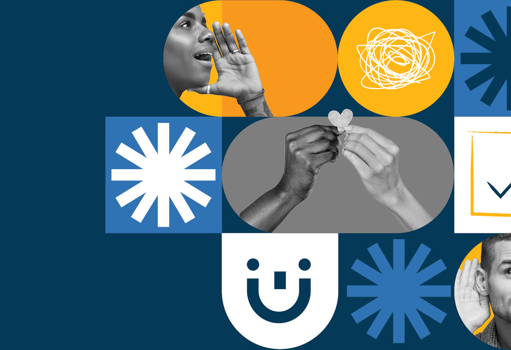

Kelly
Nicoll
Building brands from the inside out
Creative Director and Brand Strategist
Open to permanent and contract opportunities in senior brand and creative leadership roles. I’m especially interested in brands in transition or companies looking to activate their brand value across the organization.